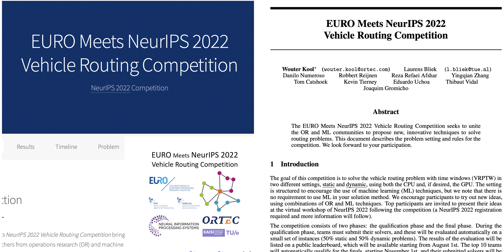
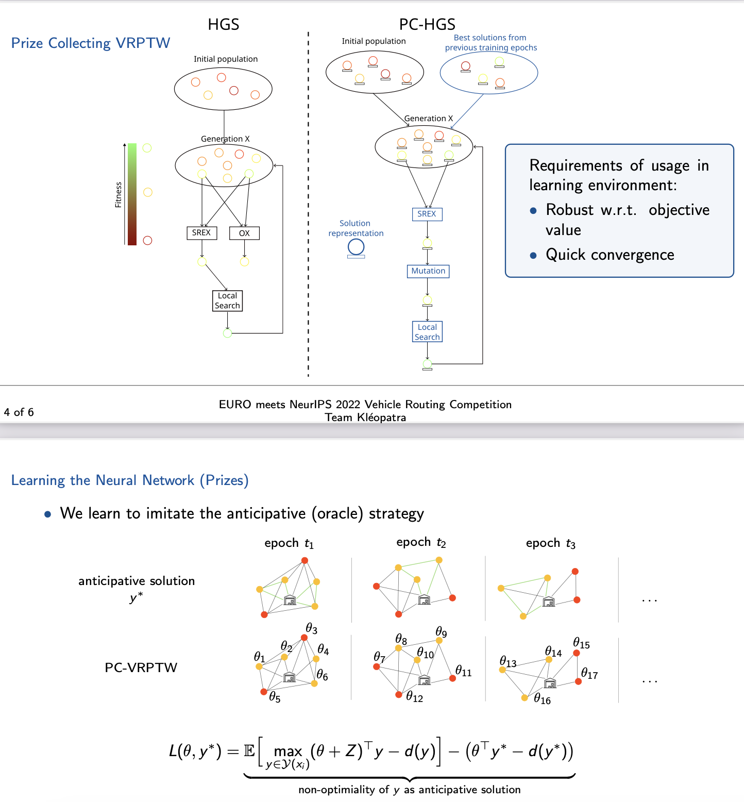

当组合优化遇到深度学习
(EURO meets NeurIPS 2022)¶
本文简单介绍一个前两周看到的2022年举办的挺有意思的一个比赛。EURO Meets NeurIPS。借助深度学习、强化学习方法，解决动态的组合优化问题。本文会简介比赛内容、第一名解决方案等。

“EURO Meets NeurIPS 2022 车辆路径规划竞赛” 汇聚了运筹学（OR）与机器学习（ML）领域的研究人员，共同解决带时间窗的车辆路径规划问题（VRPTW）以及动态 VRPTW。
解决车辆路径规划问题（VRP）是许多工业应用中的关键任务。尽管 VRP 传统上属于运筹学领域的研究对象，但近年来已成为机器学习社区广泛关注的课题。本次竞赛结合了多个以往竞赛的经验，旨在汇聚 OR 和 ML 社区的力量，在真实世界数据的背景下攻克这一富有挑战性的 VRP 变体。
比赛由两部分组成，一个是静态的VRPTW，也就是所有的需求、时间窗等都是预先知道的，另一个是动态版本，在动态版本中，新的订单会在一天中陆续到达。
Dynamic VRPTW
订单会在一天的不同时段（以1小时为单位的时间段）到达。求解器需要决定当前时间段内哪些订单需要立即派送，并为其创建可行的路径规划；哪些订单可以推迟派送，以便与后续可能到来的新订单进行合并。 有些订单是“必须派送”的，即必须在当前时间段内完成派送，因为延迟会导致其时间窗变得不可行。 在最后一个时间段，所有订单都是“必须派送”的。本次比赛将提供一个环境，该环境会从一个静态的VRPTW实例中均匀采样订单的位置、需求、服务时间和时间窗。对于动态变体来说，静态实例提供了一个“客户库”，后续订单可能从中产生。求解器可以利用这一信息，通过控制脚本与环境进行交互，而该脚本也将用于求解器的最终评估。
求解器需要在严格的时间限制内（按每个时间段）给出解决方案，并且仅能使用单核CPU和单块GPU。具体的细节将在7月1日比赛开始时提供，届时将发布一个快速入门仓库。该仓库包含一组问题实例、环境的实现以及一个基准求解器，参赛者可以利用这些资源开发自己的求解器。
本次比赛中使用的VRPTW问题与DIMACS VRPTW挑战中的问题相同，但实例来源于ORTEC提供的实际数据，并附有显式的持续时间矩阵，用于表示客户之间的实际道路驾驶时间（非欧几里得距离）。客户数量在200到1000之间。每个客户有一个坐标、需求、时间窗和服务时长，服务必须在时间窗内开始。如果车辆到达客户时过早，可以等待，但不能迟到。车辆服务的总需求量不得超过车辆的容量。按照DIMACS的惯例，本次比赛的目标是最小化总行驶距离，距离以纯驾驶时间（不包括等待时间）为单位计算。比赛中没有关于车辆数量的硬性约束或目标。
第一名的解决方案¶
第一名获奖者团队 Kléopatra 的论文中提出了解决带时间窗的车辆路径问题（VRPTW）及其动态变体的创新方法，尤其在动态问题上结合了深度学习与组合优化。以下是其主要方法细节：
动态问题的解决方法¶
整体思路
动态问题被建模为一种“奖赏收集型带时间窗的车辆路径问题”（Prize-Collecting VRPTW, PC-VRPTW）。核心是为每个请求分配奖赏值（prize），根据这些奖赏值决定哪些请求应被服务，哪些应被推迟，从而将动态问题简化为静态优化问题。
方法结构：一个两层的结构化学习管道¶
- 预测层 (Prediction Layer)
- 利用神经网络预测每个请求的奖赏值 \( \theta_v \)。
-
特征提取：
- 请求和时间段的属性（如归一化的时间窗、附近必须服务请求的数量、剩余时间段的数量）。
- 提取的特征被输入神经网络，每个请求生成一个对应的奖赏值。
-
组合优化层 (Combinatorial Optimization Layer)
- 使用一种扩展的“混合遗传搜索算法”（Hybrid Genetic Search, HGS），解决 PC-VRPTW 问题。
- 核心改进：
- 变异机制：引入两种新的变异操作，分别基于随机概率增加或删除15%的请求，以及优化当前请求集合的奖赏值。
- 局部搜索：增加新的移除与插入请求的操作。
- 初始化策略：对学习过程中产生的极端权重进行预处理，确保算法能够有效处理必须服务或明确无利可图的请求。

学习方法¶
- 目标
-
学习神经网络权重 \( w \)，使预测出的奖赏值 \( \theta_t \) 所生成的路径 \( y_t \) 能在未见过的实例上表现良好。
-
损失函数
-
通过 Fenchel-Young 损失函数建模。损失衡量了预测路径与“预知者（oracle）”路径的差异，结合了正则化和高斯噪声以改善学习过程中的平滑性和鲁棒性。
-
训练数据
- 从静态实例生成的动态问题数据集，包括 4 到 7 个时间段，每个时间段的请求数从 50 降至 20，以加速训练。
-
使用预知者策略为每个时间段标注最优路径作为训练标签。
-
优化过程
- 使用 ADAM 优化器对神经网络进行训练。
- 通过蒙特卡罗采样估算期望值，从而高效计算梯度。
实验结果详细分析¶
作者在论文中详细对比了他们的方法与其他基准方法的表现，并提供了关键指标的改进情况。
评价标准¶
作者使用 解的质量相对于“预知者”（Oracle Solution）解的差距（gap） 作为主要评价标准。
- 具体定义：
\( \text{Gap} = \frac{\text{Pipeline Solution Objective} - \text{Oracle Objective}}{\text{Oracle Objective}} \times 100\% \)
即，较低的 gap 表示方法生成的解更接近理论最优解。
对比基准方法¶
作者的方法与以下几种基准算法进行了对比：
1. Oracle: 预知者策略，理论上的最优解，作为基准上限。
2. DQN (Deep Q-Network): 使用深度强化学习进行决策的动态路径规划方法。
3. Greedy: 贪婪算法，每次选择当前最优请求进行派送。
4. Supervised: 经典监督学习方法，直接学习最佳的路径规划决策。
5. Random: 随机派送请求的策略。
6. Lazy: 推迟尽可能多的请求，直到最后时间点。
实验结果¶
- 主要结果对比
- Pipeline Solution（作者方法）:
- 相对于 Oracle 解的平均 gap 为 3.55%。
-
其他方法的 gap:
- Greedy: 20.15%
- DQN: 20.15%
- Supervised: 显著高于 20%（未给具体值，但劣于 Greedy 和 DQN）。
- Random 和 Lazy: 结果更差，表现最差。
-
结果展示
-
通过箱线图（Figure 3），作者展示了各方法的 gap 分布：
- 作者的 Pipeline 方法的平均 gap 最低，分布也更集中，波动较小。
- Greedy 和 DQN 的 gap 显著更高，且分布的波动较大。
- Random 和 Lazy 方法的解明显质量不佳，与其他方法拉开较大差距。
-
改进效果
- 作者方法的平均 gap 3.55%，比次优方法（Greedy 和 DQN 的 20.15%）减少了约 16.6 个百分点。
- 与 Random 和 Lazy 方法相比，改进幅度更大，达数十个百分点。
重要实验设置与结论¶
- 训练时间
- 神经网络的训练时间约为 1 天。每个训练迭代包含 20 次蒙特卡罗采样，总计需解决数千个 PC-VRPTW 实例。
-
训练过程中使用了优化后的静态问题生成动态问题实例，以平衡训练效率和解的泛化能力。
-
解的泛化性
- 实验表明，尽管训练数据中的动态实例规模较小（每个时间段仅包含 20 个请求），作者的方法在更大规模的实例上仍然表现优异，显示了较强的泛化能力。
总结¶
作者的方法通过结合神经网络预测与组合优化，显著提高了动态 VRPTW 的求解性能。与传统贪婪算法和深度强化学习方法相比，gap 减少了约 80%，表明其方法在真实世界动态优化问题中的潜力。